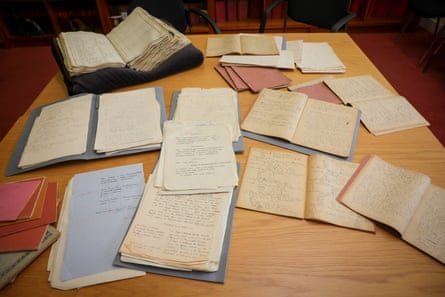
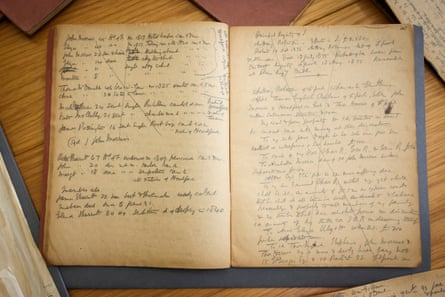

Seven centuries of lost historical records covering espionage, political corruption and the lives of ordinary people in Ireland have been recovered and are being released.
A pioneering project to fill gaps in Irish history is making 175,000 more records and millions more words of searchable content freely available to researchers and members of the public.
The Virtual Record Treasury of Ireland , a global academic collaboration led by Trinity College Dublin, deployed historians, computer scientists and other specialists to digitally recreate parts of a vast archive destroyed in Ireland’s civil war.
The project launched in 2022 on the centenary of the burning of the Public Record Office in Dublin in a five-day battle that began on 28 June 1922. It is now marking the 103rd anniversary of the calamity by adding freshly recovered material that takes in the Anglo-Norman conquest and the 1798 rebellion and a genealogical trove from 19th-century censuses.
Notebooks containing transcriptions made by genealogists and historians of the 19th-century census before it was destroyed by fire in 1922.Photograph: Chris Bellew/Fennell Photography
“It’s a very significant scale of data,” said Peter Crooks, a Trinity historian and academic director of the project. “It’s an enormous stretch of time from the 13th century up to the 19th century. The scale of what can be brought in, in terms of reconstruction, continues to amaze me.”
Once the envy of scholars around the world, the six-storey Public Record Office at the Four Courts by the River Liffey contained priceless troves dating from medieval times. It was obliterated as troops of the fledgling Irish state battled former comrades hunkered in the building.
It was long assumed that all was lost but the project enlisted 75 archives and libraries in Ireland , the UK and around the world to source transcripts and duplicates of documents, many of which had lain, forgotten, in storage. The latest troves to be catalogued and digitised bring the total to 350,000 records and 250m words of searchable Irish history.
Patrick O’Donovan, the culture minister, said international collaboration underpinned the “riches” that had been rediscovered. “It offers an invaluable historical resource for people of all ages and traditions across the island of Ireland and abroad, and democratises access so that our shared history is more accessible and engaging for everyone.”
The project has fused old-fashioned academic investigation, artificial intelligence and support and expertise from institutions that contain Irish records, notably the National Archives of Ireland, the Public Record Office of Northern Ireland, the UK National Archives at Kew and the Irish Manuscripts Commission. “The circle of collaborators has widened and deepened,” said Crooks.
The latest material includes 60,000 names from the lost censuses, creating a data hoard for genealogists and Irish diaspora descendants, among others, to trace family lineage, says Ciarán Wallace, a Trinity historian and co-director of the project. “This is only a fragment of what’s missing but 60,000 is a huge improvement on a blank slate.”
A notebook preserved in the National Archives of Ireland containing names of two households, transcribed from the 1841 census for Headford, County Galway.Photograph: Chris Bellew/Fennell Photography
The project’s “age of conquest” portal contains parchments in Latin and 5m words of Anglo-Norman Irish history, spanning 1170 to 1500, that have been translated into English.
Uploaded state papers, spanning 1660 to 1720, comprise 10m words, including extensive intelligence reports from the Tudor era when English monarchs tightened their grip on England’s first colony.
A diary that ended up at the US Library of Congress is now accessible and sheds light on dodgy deals that led to the abolition of the Irish parliament in 1800 and Ireland’s incorporation into the UK. “You find out about some of those underhanded dealings,” said Joel Herman, a research fellow who works on the project. “One member of parliament said he can’t vote for it because of the corrupt methods that have been used to win votes.”
Along with the new material, a search tool called the Knowledge Graph Explorer is being introduced that can identify people, places and the links between them.